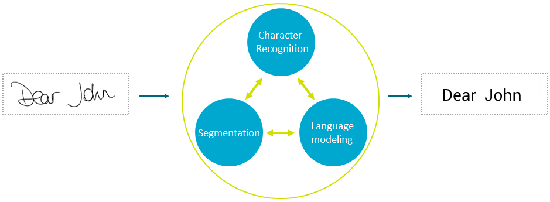

MyScript Text can recognize handwritten text and transform it into digital text.

The recognizer will process the handwriting intelligently. It refers to lexicons, and uses a language model to understand how parts of a language come together and interact. It will not just guess one character at a time, but a whole sentence. So you can allow your application to accept complex handwriting.
For more information on the recognition process, see the Recognition overview section.
For other types of recognition, different engines are used and the process is simpler, as less data resources (e.g. dictionaries) are needed.
MyScript technology relies on three main processes: symbol classification, segmentation and linguistic-based analysis. These three main stages take place simultaneously. Information is exchanged between the three processes to find the most probable recognition result.
See the Reference guide for information on the mandatory and optional parameters needed for Text recognition.
The below example shows a Text recognition request where the following are to be specified:
<!DOCTYPE html>
<html>
<head>
<title>Text samples</title>
</head>
<body>
<h1>Text samples</h1>
<h2>REST samples</h2>
<h3>Simple input</h3>
<div>
<canvas id="text-canvas" width="400" height="300" style="background-color: lightyellow;"></canvas>
<br />
<code id="text-result"></code>
</div>
</body>
<script type="text/javascript" src="lib/core-min.js"></script>
<!-- CryptoJS imports -->
<script type="text/javascript" src="lib/core-min.js"></script>
<script type="text/javascript" src="lib/x64-core-min.js"></script>
<script type="text/javascript" src="lib/sha512-min.js"></script>
<script type="text/javascript" src="lib/hmac-min.js"></script>
<!-- Q imports -->
<script type="text/javascript" src="lib/q.js"></script>
<!-- HandJS imports -->
<script type="text/javascript" src="lib/hand.minified-1.3.8.js"></script>
<!-- MyScriptJS imports -->
<script type="text/javascript" src="../myscript.min.js"></script>
<script>
var result = document.getElementById("text-result");
var canvas = document.getElementById("text-canvas");
var context = canvas.getContext("2d");
var pointerId;
var instanceId;
/*
* Declare MyScript Cloud url and authentication keys
*/
var url = 'http://cloud.myscript.com/api/v3.0/recognition/rest';
var applicationKey = 'xxxxxxxx-xxxx-xxxx-xxxx-xxxxxxxxxxxx';
var hmacKey = 'xxxxxxxx-xxxx-xxxx-xxxx-xxxxxxxxxxxx';
/*
* Declare an instance of MyScriptJS Text Recognizer
*/
var textRecognizer = new MyScript.TextRecognizer(url);
/*
* Set Recognition language (i.e.: "en_US")
*/
textRecognizer.getParameters().setLanguage('en_US');
function doRecognition () {
var inputUnit = new MyScript.TextInputUnit();
inputUnit.setComponents(stroker.getStrokes());
var units = [inputUnit];
textRecognizer.doSimpleRecognition(applicationKey, instanceId, units, hmacKey).then(
function (data) {
if (!instanceId) {
instanceId = data.getInstanceId();
} else if (instanceId !== data.getInstanceId()) {
return;
}
result.innerText = JSON.stringify(data.getTextDocument());
}
)
}
/*
* Declare an instance of MyScriptJS Stroker in order to capture digital ink
*/
var stroker = new MyScript.Stroker();
/*
* Declare an instance of MyScriptJS Text Renderer in order to enable ink rendering
*/
var textRenderer = new MyScript.TextRenderer();
/*
* Declare an instance of MyScriptJS Text Recognizer
*/
var textRecognizer = new MyScript.TextRecognizer(host);
function doRecognition () {
if (stroker.isEmpty()) {
result.innerText = '';
} else {
var inputUnit = new MyScript.TextInputUnit();
inputUnit.setComponents(stroker.getStrokes());
var units = [inputUnit];
textRecognizer.doSimpleRecognition(applicationKey, instanceId, units, hmacKey).then(
function (data) {
if (!instanceId) {
instanceId = data.getInstanceId();
} else if (instanceId !== data.getInstanceId()) {
return;
}
result.innerText = data.getTextDocument().getTextSegmentResult().getSelectedCandidate().getLabel();
}
);
}
}
/*
* on pointer down: Start ink rendering and ink capture.
*/
canvas.addEventListener('pointerdown', function (event) {
if (!pointerId) {
pointerId = event.pointerId;
event.preventDefault();
//Start ink rendering
textRenderer.drawStart(event.offsetX, event.offsetY);
//Start ink capture
stroker.startStrokeWriting(event.offsetX, event.offsetY);
}
}, false);
/*
* on pointer move: Continue ink rendering and ink capture.
*/
canvas.addEventListener('pointermove', function (event) {
if (pointerId === event.pointerId) {
event.preventDefault();
//Continue ink rendering
textRenderer.drawContinue(event.offsetX, event.offsetY, context);
//Continue ink capture
stroker.continueStrokeWriting(event.offsetX, event.offsetY);
}
}, false);
/*
* on pointer up: Stop ink rendering and ink capture and send recognition request.
*/
canvas.addEventListener('pointerup', function (event) {
if (pointerId === event.pointerId) {
event.preventDefault();
//Stop ink rendering
textRenderer.drawEnd(event.offsetX, event.offsetY, context);
//Stop ink capture
stroker.endStrokeWriting();
//Send recognition request
if (!stroker.isEmpty()) {
doRecognition();
}
pointerId = undefined;
}
}, false);
/*
* on pointer leave: Continue ink rendering and ink capture.
*/
canvas.addEventListener('pointerleave', function (event) {
if (pointerId === event.pointerId) {
event.preventDefault();
//Stop ink rendering
textRenderer.drawEnd(event.offsetX, event.offsetY, context);
//Stop ink capture
stroker.endStrokeWriting();
//Send recognition request
if (!stroker.isEmpty()) {
doRecognition();
}
pointerId = undefined;
}
}, false);
</script>